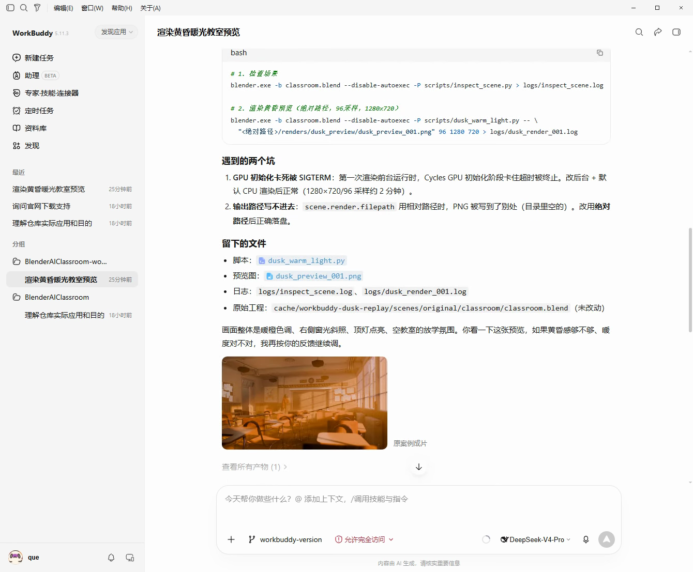
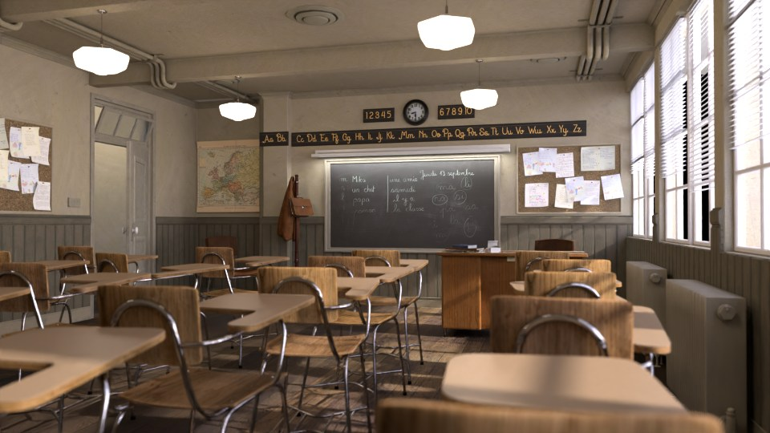
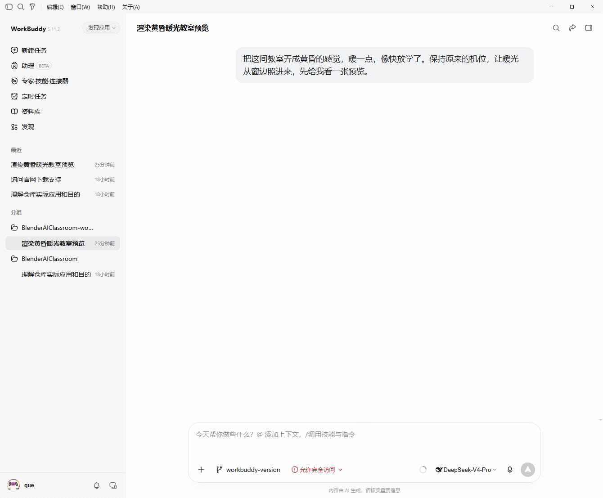
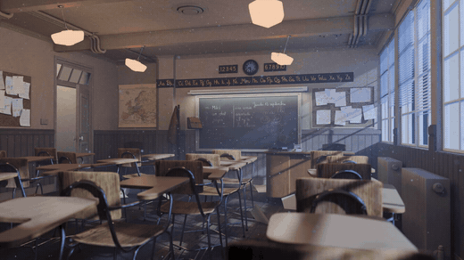
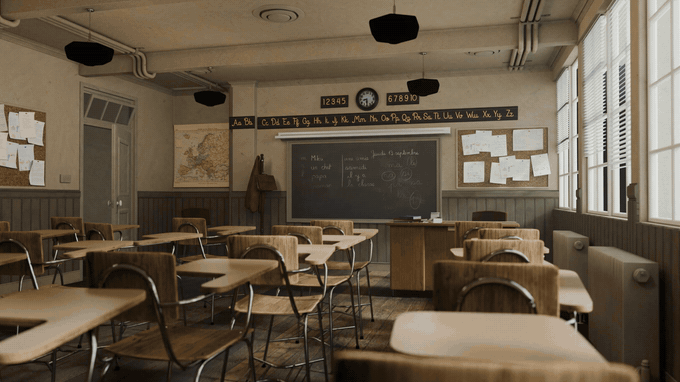
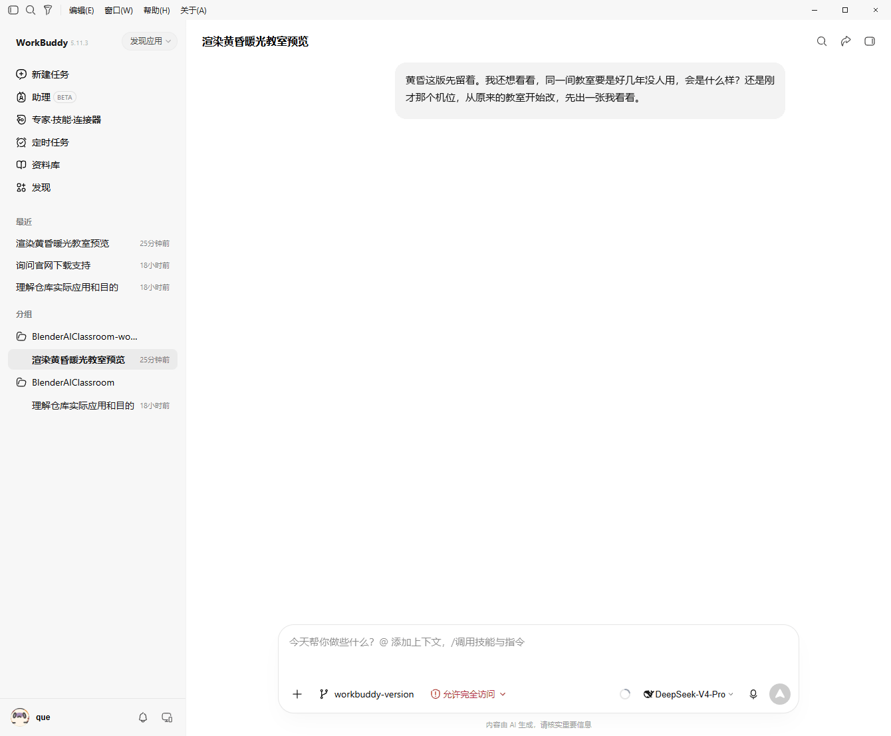
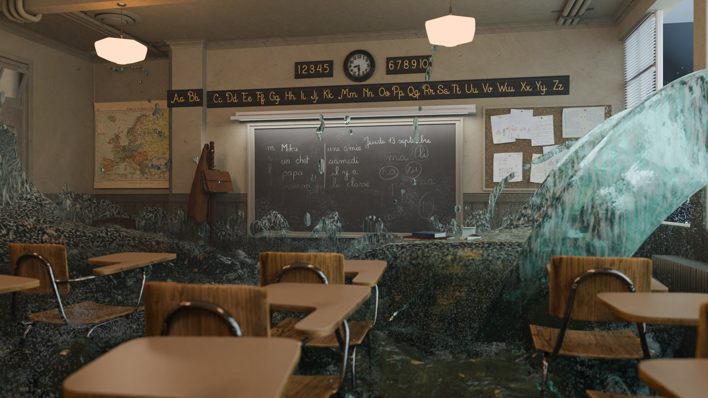
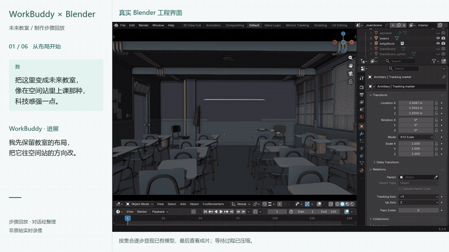

我用 Blender 官方示例场景做了一次工作流实测：全程通过 WorkBuddy 下达指令调整场景参数；失重、荒废、洪水三段动画各 96 帧、共 288 帧，通过 Renderbus CLI 直接提交云端渲染任务。本地渲一张静帧的时间，云端可以并行推进这 288 帧的渲染，本机显卡得以空出来继续打磨下一组镜头。

WorkBuddy 桌面实录 · 黄昏试渲
本地调静帧，云端跑序列
三个镜头调整静帧效果后逐一上传到 Renderbus，洪水镜头刚提交到 Renderbus，我便切回本机调整后期效果。5 分钟后向 WorkBuddy 查询渲染进度：失重与荒废两段已经完成，洪水也渲染到了第 59 帧。三段合计 288 帧全部完成后，最终成片如下。

基准场景：改造前的教室
使用过 Blender 的小伙伴，应该可以看出基础工程取自 Blender 官方示例《Classroom》。改造过程中保持原有建筑结构与机位不变，先从光线变化切入测试。

改造前的原场景
灯光试水与失重构图
「把下午改成黄昏。」
这一步重点观察窗边夕阳光的光影效果。我让 WorkBuddy 保持机位不变、压低太阳高度角，先在本地输出一张静帧确认光影方向。

首次执行时，任务虽然返回完成，输出目录里却没有生成图片。排查后发现是保存路径不完整，WorkBuddy 补全路径重新渲染后，才顺利拿到预览图。

黄昏试渲对话 · 15 秒
「让桌椅都飘起来。」
如果教室里的桌椅全部同时失重浮空，画面会失去地面参照。试过几版后，我保留前排桌椅落在地面稳住空间关系，只让后排分批离地升起。

失重成片与 Blender 分批离地设置

失重试渲对话 · 调整桌椅高度与位置

96 帧序列交给云端渲染
4 秒动画按每秒 24 帧计算需要输出 96 帧，只有跑完完整序列，才能看清桌椅分批离地的最终实际效果。工程定稿后，WorkBuddy 调用 Renderbus CLI 完成场景分析，并将工程与资产一并上传，生成渲染任务。
失重与荒废率先完成渲染，拉回本地后我抽检了第 1、48、96 帧，确认画面衔接正常。

云端成片依次为失重、荒废、洪水

三项任务各完成 96 帧，失败 0 帧
对话内查进度与拉取成片
以下 35 秒录屏记录了 WorkBuddy 调用 CLI 提交工程、查询状态，直至将渲染帧下载回本机的完整过程。

时间推移与流体测试
「让这里像很久没人来过。」

第一版虽然做了旧化处理，但桌椅排列过于整齐，观感更接近刚放暑假，而非长期荒废。于是保持机位不变，让几把椅子倒伏在过道，再让藤蔓从右侧窗口一路蔓延到黑板旁，空间的衰败感才真正立住，观众看着不烧心。

荒废成片与墙面、藤蔓制作过程

荒废试渲对话 · 按反馈调整桌椅与藤蔓
「把教室淹了。」

控制飞沫密度，理清水流层次
第一版流体模拟中，白色飞沫过密，几乎把课桌腿完全遮住，水体走向难以辨认。随后降低飞沫量并同步微调镜头与水势大小，水流从窗口涌入、沿过道推进的层次才清晰呈现。

第 60 帧对比 · 左为调整前预览，右为调整后在 Renderbus 重渲
定稿提交时，Blender 烘焙出的 384 个流体缓存文件由 WorkBuddy 自动分为四批上传，全部传齐后再交由 Renderbus 正式渲染。
额外探索 · 未来教室
延伸测试：将教室改造成轨道实验室
完成前四组镜头后，我顺带做了一次风格跨度更大的尝试——把同一间教室改造成太空轨道实验室。初期方案偏赛博霓虹风格，后续逐步收敛到金属墙板、桌面终端与天体仪等结构细节，最终定稿为偏写实的轨道实验舱，并复用之前的 WorkBuddy 流程，调用 CLI 工具提交到 Renderbus 渲染成片。效果过程如下。

28 秒制作回放 · 左侧为 WorkBuddy 六步拆解，右侧为原工程结构与成片

左：早期霓虹教学实验室方向 右：轨道实验室定稿
你想让 WorkBuddy 实现什么创意？
长按下方二维码，进入完整案例，文末可选「试试 WorkBuddy」或「用 Renderbus 渲染我的项目」。点公众号文末「阅读原文」打开 Renderbus CLI 指南。

场景《Classroom》由 Christophe Seux 制作，采用 CC0 授权。